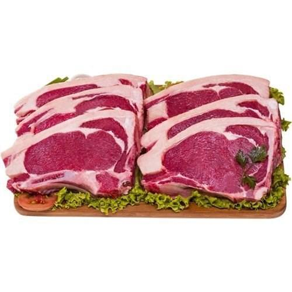

Mapa CarneCerta
Clássico de grelha com sabor marcante
A bisteca do contra file entrega maciez, gordura bem distribuída e resultado incrível em grelha e churrasqueira.

Ideal para • churrasco • bife • grelha
Maciez
5/5
Alta
Gordura
3/5
Equilibrada
Sabor
4/5
Marcante
Abrir recomendador inteligente
Bisteca do Contra File
Um corte clássico que une textura macia, suculência equilibrada e sabor marcado para os pratos mais tradicionais.
A bisteca do contra file é perfeita para quem quer um corte forte no sabor, com resposta excelente em pratos de churrasqueira, grelha e bifes mais grossos.
Grelha
Bifes grossos
Churrasco
4.8
Favorito de grelha
Excelente para quem quer um corte com sabor forte, maciez e resposta de churrasqueira sem perder a identidade clássica.
Ideal para
Dica do açougueiro IA
Deixe a gordura dourar primeiro e depois finalize o ponto para manter suculência e sabor sem ressecar a carne.